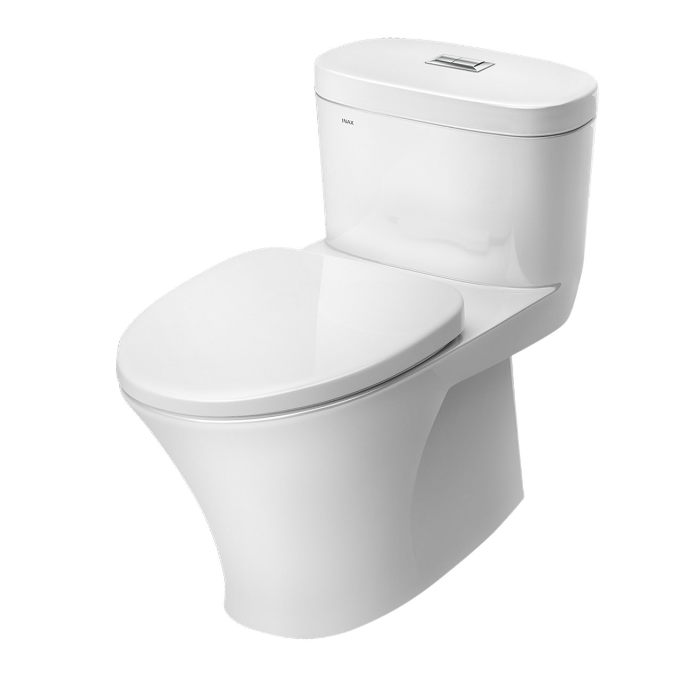
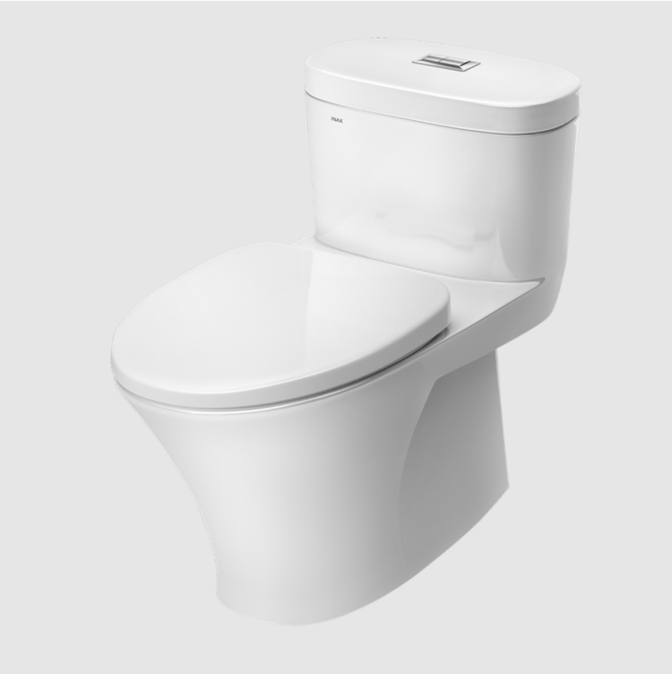
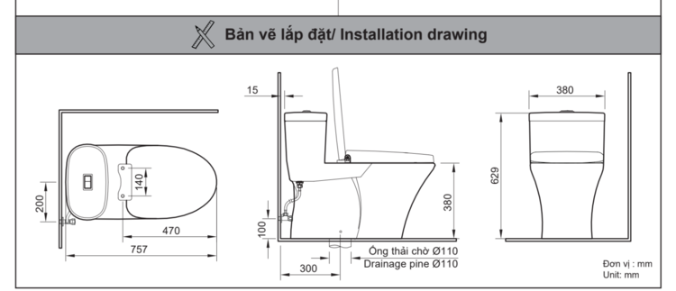

Bàn cầu 1 khối INAX AC-959VAN là minh chứng cho sự kết hợp hoàn hảo giữa công nghệ xả rửa tiên tiến và thiết kế hiện đại, sang trọng. Đây là dòng sản phẩm cao cấp thuộc thiết bị vệ sinh INAX, được thiết kế để mang lại sự tiện nghi tối ưu và vẻ đẹp tinh tế cho không gian phòng tắm của các gia đình Việt.Thiết kế AC-959VAN sang trọng và tinh tếBồn cầu 1 khối AC-959VAN sở hữu kiểu dáng liền khối với các đường nét bo tròn mềm mại, không chỉ tạo nên phong cách hiện đại cho phòng tắm mà còn giúp việc vệ sinh thân bồn trở nên dễ dàng hơn bao giờ hết. Với kích thước 380 x 760 x 636 mm, bàn cầu phù hợp với nhiều diện tích phòng tắm khác nhau, đặc biệt là các không gian kiến trúc cao cấp.Công nghệ trắng sạch Aqua Ceramic đột pháĐiểm nhấn quan trọng nhất của AC-959VAN chính là công nghệ Aqua Ceramic – công nghệ trắng sạch số 1 thế giới với các đặc điểm nổi bật sau:Chống bám bẩn vĩnh viễn: Lớp men sứ Aqua Ceramic có khả năng ngăn chặn hiệu quả việc hình thành các vết ố vàng hay vết đọng nước trên bề mặt sứ.Tiết kiệm thời gian vệ sinh: Nhờ bề mặt siêu ưa nước, các vết bẩn dễ dàng bị cuốn trôi chỉ với dòng nước xả thông thường, giúp người dùng hạn chế tối đa việc sử dụng hóa chất tẩy rửa độc hại.Độ bền cao: Công nghệ Aqua Ceramic giúp bề mặt bồn cầu luôn sáng bóng như mới sau nhiều năm sử dụng.Hệ thống xả Siphon xoáy hút mạnh mẽBồn cầu INAX AC-959VAN ứng dụng hệ thống xả Siphon kết hợp với công nghệ vành RIM mở tạo nên hiệu ứng xoáy cực mạnh. 100% lượng nước được xả từ phía trên tạo thành dòng xoáy mạnh mẽ, quét sạch mọi chất bẩn ở mọi ngóc ngách trong lòng bầu.Bên cạnh đó, dòng AC-959VAN còn sở hữu nắp bồn cầu CF-500VS với thiết kế đóng êm, hoàn toàn không gây ra tiếng động khó chịu khi sử dụng vào ban đêm, phù hợp cho các gia đình có người lớn tuổi và những người không chịu được tiếng động lớn.Tiết kiệm nước và thân thiện môi trườngVới hai mức xả nhấn 4.5L và 6.5L, bồn cầu 1 khối AC-959VAN giúp người dùng linh hoạt lựa chọn mức nước phù hợp với nhu cầu sử dụng, từ đó tiết kiệm tài nguyên nước một cách hiệu quả.Ngoài ra, khả năng kết hợp của loại bồn cầu 1 khối này cũng khá linh hoạt khi có thể kết hợp với các loại nắp điện tử hoặc nắp rửa cơ, giúp nâng tầm trải nghiệm vệ sinh thông minh cho người dùng.Video giới thiệu công nghệ Aqua Ceramic độc quyền INAXBản vẽ lắp đặt bồn cầu 1 khối AC-959VANFile hướng dẫn lắp đặt bồn cầu 1 khối AC-959VANThông số kỹ thuật bồn cầu 1 khối AC-959VANLoại sản phẩmBàn cầu 1 khối xả nhấnKích thước380 x 760 x 636 (mm) (Rộng x Dài x Cao)Thương hiệuINAXCông nghệ menAqua Ceramic - Công nghệ men độc quyền chống bám bẩn, ngăn ngừa vệt ố vàng, giữ bề mặt sứ luôn trắng sáng suốt 100 nămChế độ xảXả nhấn 2 mức nước tiện lợi, tối ưu lượng nước tiêu thụ: 6.5L (đại) / 4.5L (tiểu)Hệ thống xảSiphon xoáy hút mạnh mẽ, tạo lực hút kép đồng thời cuốn trôi mọi chất bẩn cứng đầu một cách nhanh chóng và không gây tiếng ồn lớnMàu sắcTrắng thanh lịchKhác- Hotline tư vấn và bảo hành chính hãng: 18006633
Bồn cầu 1 khối AC-959VAN
Bàn cầu thương hiệu INAX.
Đã cập nhật danh sách yêu thích.
DANH MỤC: Bàn cầu
MÃ SẢN PHẨM: AC-959VAN
DEPTH: 760mm
HEIGHT: 636mm
WIDTH: 380mm
Bàn cầu 1 khối INAX AC-959VAN là minh chứng cho sự kết hợp hoàn hảo giữa công nghệ xả rửa tiên tiến và thiết kế hiện đại, sang trọng. Đây là dòng sản phẩm cao cấp thuộc thiết bị vệ sinh INAX, được thiết kế để mang lại sự tiện nghi tối ưu và vẻ đẹp tinh tế cho không gian phòng tắm của các gia đình Việt.Thiết kế AC-959VAN sang trọng và tinh tếBồn cầu 1 khối AC-959VAN sở hữu kiểu dáng liền khối với các đường nét bo tròn mềm mại, không chỉ tạo nên phong cách hiện đại cho phòng tắm mà còn giúp việc vệ sinh thân bồn trở nên dễ dàng hơn bao giờ hết. Với kích thước 380 x 760 x 636 mm, bàn cầu phù hợp với nhiều diện tích phòng tắm khác nhau, đặc biệt là các không gian kiến trúc cao cấp.Công nghệ trắng sạch Aqua Ceramic đột pháĐiểm nhấn quan trọng nhất của AC-959VAN chính là công nghệ Aqua Ceramic – công nghệ trắng sạch số 1 thế giới với các đặc điểm nổi bật sau:Chống bám bẩn vĩnh viễn: Lớp men sứ Aqua Ceramic có khả năng ngăn chặn hiệu quả việc hình thành các vết ố vàng hay vết đọng nước trên bề mặt sứ.Tiết kiệm thời gian vệ sinh: Nhờ bề mặt siêu ưa nước, các vết bẩn dễ dàng bị cuốn trôi chỉ với dòng nước xả thông thường, giúp người dùng hạn chế tối đa việc sử dụng hóa chất tẩy rửa độc hại.Độ bền cao: Công nghệ Aqua Ceramic giúp bề mặt bồn cầu luôn sáng bóng như mới sau nhiều năm sử dụng.Hệ thống xả Siphon xoáy hút mạnh mẽBồn cầu INAX AC-959VAN ứng dụng hệ thống xả Siphon kết hợp với công nghệ vành RIM mở tạo nên hiệu ứng xoáy cực mạnh. 100% lượng nước được xả từ phía trên tạo thành dòng xoáy mạnh mẽ, quét sạch mọi chất bẩn ở mọi ngóc ngách trong lòng bầu.Bên cạnh đó, dòng AC-959VAN còn sở hữu nắp bồn cầu CF-500VS với thiết kế đóng êm, hoàn toàn không gây ra tiếng động khó chịu khi sử dụng vào ban đêm, phù hợp cho các gia đình có người lớn tuổi và những người không chịu được tiếng động lớn.Tiết kiệm nước và thân thiện môi trườngVới hai mức xả nhấn 4.5L và 6.5L, bồn cầu 1 khối AC-959VAN giúp người dùng linh hoạt lựa chọn mức nước phù hợp với nhu cầu sử dụng, từ đó tiết kiệm tài nguyên nước một cách hiệu quả.Ngoài ra, khả năng kết hợp của loại bồn cầu 1 khối này cũng khá linh hoạt khi có thể kết hợp với các loại nắp điện tử hoặc nắp rửa cơ, giúp nâng tầm trải nghiệm vệ sinh thông minh cho người dùng.Video giới thiệu công nghệ Aqua Ceramic độc quyền INAXBản vẽ lắp đặt bồn cầu 1 khối AC-959VANFile hướng dẫn lắp đặt bồn cầu 1 khối AC-959VANThông số kỹ thuật bồn cầu 1 khối AC-959VANLoại sản phẩmBàn cầu 1 khối xả nhấnKích thước380 x 760 x 636 (mm) (Rộng x Dài x Cao)Thương hiệuINAXCông nghệ menAqua Ceramic - Công nghệ men độc quyền chống bám bẩn, ngăn ngừa vệt ố vàng, giữ bề mặt sứ luôn trắng sáng suốt 100 nămChế độ xảXả nhấn 2 mức nước tiện lợi, tối ưu lượng nước tiêu thụ: 6.5L (đại) / 4.5L (tiểu)Hệ thống xảSiphon xoáy hút mạnh mẽ, tạo lực hút kép đồng thời cuốn trôi mọi chất bẩn cứng đầu một cách nhanh chóng và không gây tiếng ồn lớnMàu sắcTrắng thanh lịchKhác- Hotline tư vấn và bảo hành chính hãng: 18006633
DANH MỤC: Bàn cầu
MÃ SẢN PHẨM: AC-959VAN
DEPTH: 760mm
HEIGHT: 636mm
WIDTH: 380mm